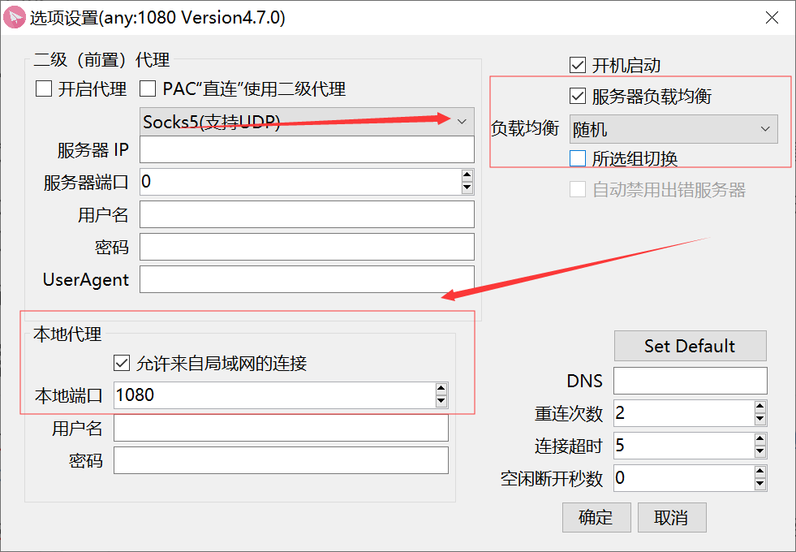
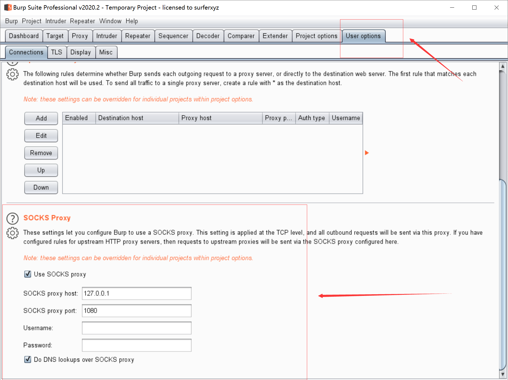
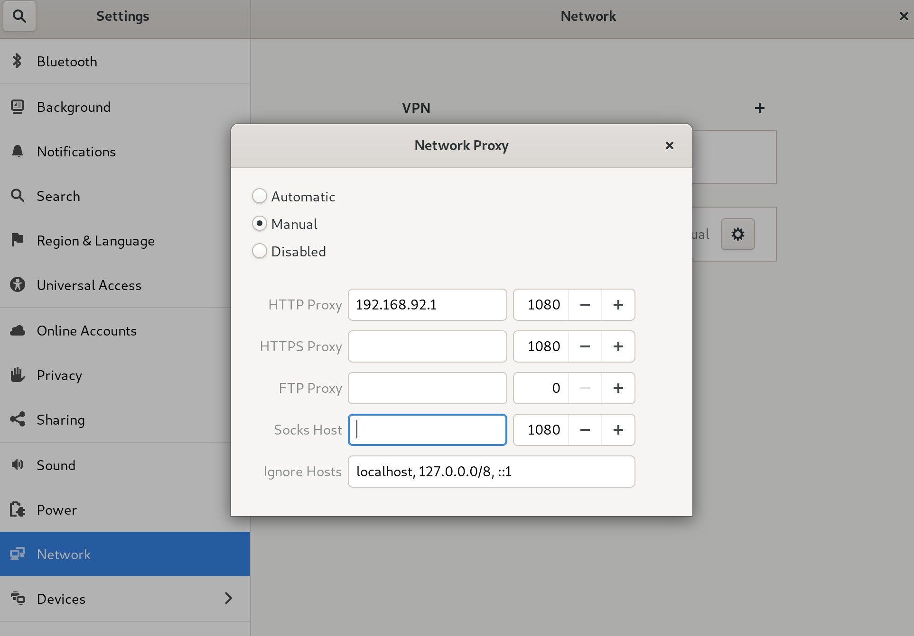
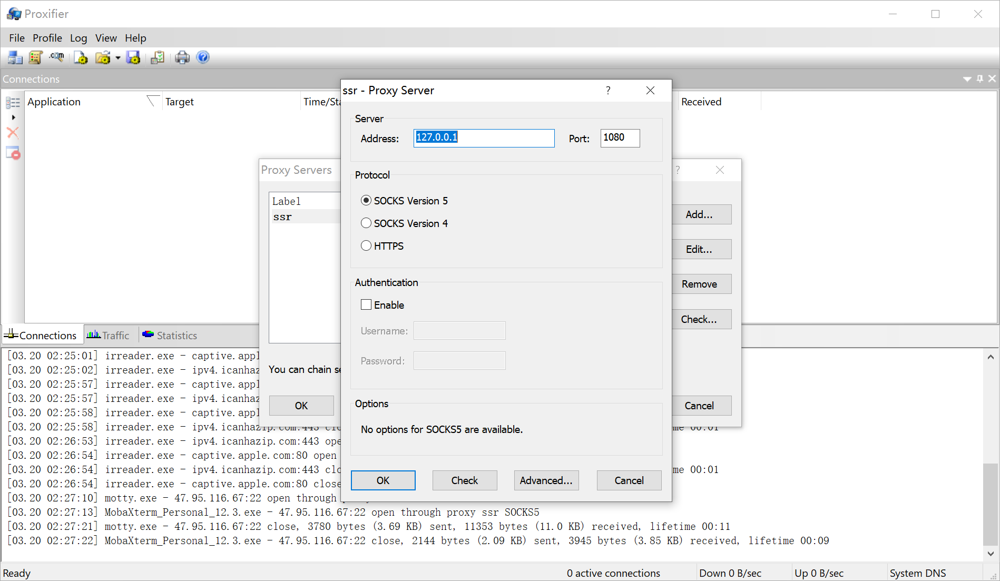

(本文首发于T00ls论坛,链接:https://www.t00ls.net/articles-55479.html , 这么简单的小技巧竟然有13000阅读了,惊了!!)
前言
代理池是渗透测试中常用的工具,用来躲避各种各样的封IP的防火墙,也帮助自身隐藏踪迹.
大部分工具也支持代理选项,但少有支持代理池的.实际上,不需要修改工具去支持代理池,只需要弄一个中间层,在中间层搭建代理池,然后支持代理的工具就可以变相支持代理池了.
当然,解决方案多种多样,我只提一个最简单的.
使用
shadowsocksR应该都用过吧?没有用过的可以去这里下载https://github.com/shadowsocksr-backup/shadowsocksr-csharp/releases
ssr是一个很强大的工具,最常用来绕过网络审查,也就是”翻墙”.但ssr的选项不知道各位有没有看过,实际上还可以用来搭建代理池.
当然ssr首先需要添加服务器,这里我就不打广告了,可以自行搭建,自行搭建代理池的成本还是比较高的.所以建议购买现成的机场,大概四五十块可以买四五十个ip的服务一个季度.当然也有免费的订阅服务,但是免费的服务质量就不敢说了.
下面上手使用

需要用到这两个功能.
第一个是开启本地代理,允许来自局域网的连接.
第二个是打开负载均衡,并将模式选择 随机.
这样一个搭建在本地的代理池就完事了.
使用场景
burpsuite
burpsuite这么强大的工具肯定支持代理,所以直接填上就好了

如果是日国外的站,记得勾上Do DNS lookups over SOCKS proxy
工具使用只讲这一个,所有支持代理的工具都可以用这种方式完成代理池
Python
以requests为例.
1 | import requests |
python这里有些莫名其妙,代理协议填socks5不行,填http就可以了.
python的requests还有一个小坑,302重定向的请求不会通过代理,因此需要关闭自动重定向,加上代理后手动请求.
虚拟机
如果有些工具不支持代理池,可以把它放到虚拟机里,然后在虚拟机中配置全局的代理.
以kali为例

ip地址是ssr所在的内网地址
Proxifier
有一些工具并不支持代理功能,因此可以通过proxifier实现代理池.
配置也很简单.

OK即可.然后就可以看到应用的流量走ssr过了.
proxychains
windows下有proxifier,linux下也有类似的工具,叫proxychains.
proxychains是kali自带的工具,其他系统按照官方文档安装下即可.
使用:
vim /etc/proxychains.conf
将socks4 127.0.0.1 9095修改成
socks5 ssr所在ip 1080
proxychains wget https://google.com
SStap
sstap通过虚拟网卡实现网络层代理,应该是比上面这些都更好的选择.
但是我测试sstap的时候失败了.
sstap能连上ssr的所在的1080端口,也接收到了流量,但是访问时报错了.
如果能解决,请联系我,感谢.
小结
上面的使用场景能覆盖大多数需求,但是因为socks协议本身的限制,是会话层的协议,位于表示层与传输层之间.
因此只能代理TCP和UDP的数据.如ICPM协议的ping就无能为力了.不能像VPN一样立足于数据链路层或者网络层.